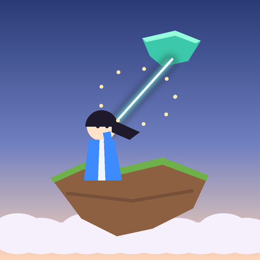

Immortal Wars
Sects of cultivators at war over the Sea of Clouds. Talismans, flying swords, and the Heaven-Binding Silk.


To install it: open the browser's menu ⋮ and tap Install app (or Add to Home screen). On an iPhone: the Share button, then Add to Home Screen.
What “install” means
The game is added to your home screen with its own icon, like any app, without the Play Store. It opens full screen, sideways or upright as you hold the phone, and starts even without internet.
It updates itself: every time you open it online, it is the latest version. Nothing to download again.
Everything runs on your phone; the site only delivers the game. To remove it, long-press its icon and choose Uninstall.
How to play
Sect War against bot sects, or Pass & Play with friends on one phone. Drag back from your disciple to aim like a slingshot, mind the wind, and knock rivals into the clouds. The Silk Trials teach the Heaven-Binding Silk: swing, let go, and kick every scarecrow off the islands.